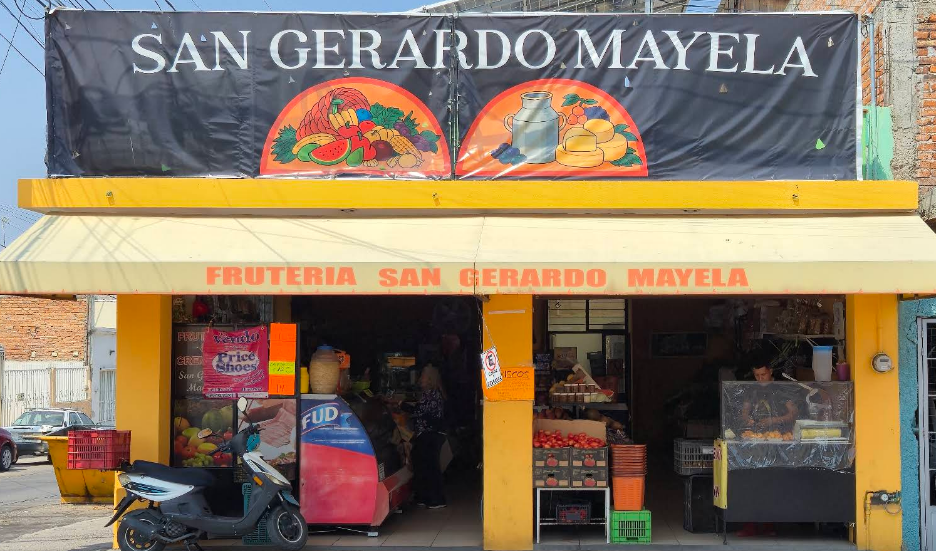

Lo más fresco, directo a tu mesa
Frutas y verduras de la mejor calidad, seleccionadas con cariño todos los días en San Gerardo Mayela.
Ver productosSobre nosotros
Tradición y frescura desde el corazón
En San Gerardo Mayela nos dedicamos a ofrecer las mejores frutas y verduras frescas, seleccionadas cuidadosamente cada día. Creemos que la calidad comienza en el origen, por eso trabajamos con productores locales de confianza.
Nuestro compromiso es llevar a tu mesa productos naturales, sabrosos y de la más alta calidad, con el cariño y la dedicación que nos caracteriza.

Contacto
¿Tienes alguna pregunta? Estamos para servirte
Dirección
Corregidora 809, Morelos I, 20298 Aguascalientes, Ags.
Teléfono
Correo
Horario
Lunes a Sábado: 7:30 am - 8:00 pm
Domingo: 7:30 am - 4:00 pm
